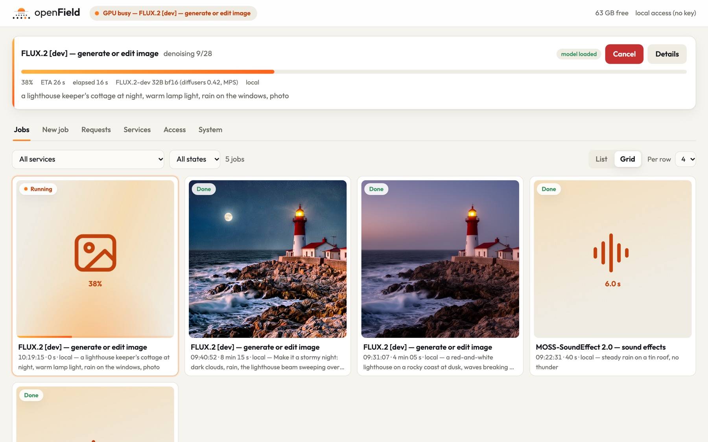
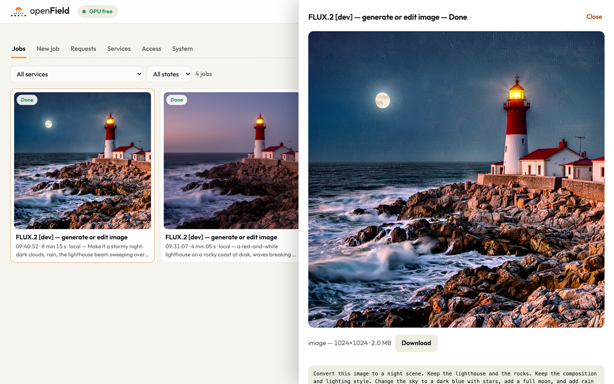
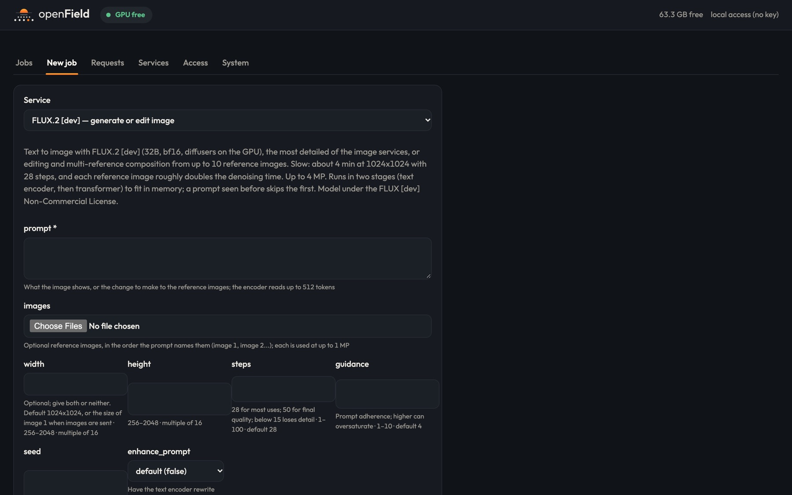
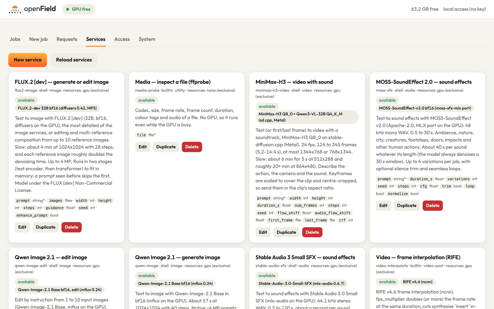

GPU used with judgment
Slots per resource, a memory check per model, and GPU tools started outside the daemon counted too.
Busy is a 409 with Retry-After; a job that cannot fit at all is a
503.
Open source · MIT · runs on your machine
Image generation and editing (Qwen Image, FLUX.2), video with sound, sound effects, video post-processing and local LLMs behind one daemon, with GPU resource control, a web UI, a REST API and an MCP server for your agents.

openField decides how many jobs the GPU runs at once and admits a new one only when there is a free slot and enough memory for its model. No queue to babysit: a busy answer comes back with when to try again.
Slots per resource, a memory check per model, and GPU tools started outside the daemon counted too.
Busy is a 409 with Retry-After; a job that cannot fit at all is a
503.
An MCP server over streamable HTTP, a REST API with OpenAPI docs, and an Agent Skills
SKILL.md generated from the services you configure. One key per agent, revocable.
Live progress and model state, a list or a grid of results, audio and video players, one-click retry of failed jobs, and a form for every service.
Resumable uploads, signed download links that need no key, and a SHA-256 for every output. Agents move
gigabytes with curl, never inside a tool call.
Wrap a command line, an asynchronous API or an OpenAI-compatible endpoint in one file: parameters, validation, progress parsing, memory and time estimates. Add or edit them from the web UI.
Your prompts, files and keys stay on your machine. Keys are stored as hashes, the machine itself needs no key, and other computers on your network sign in with their own.
Ready-made services for an Apple Silicon Mac. Each one is a YAML file you can change, duplicate or remove; a service whose tools are missing shows as unavailable.
| Service | What it does | Engine |
|---|---|---|
| Qwen Image 2.1 | Text to image, and editing by instruction from up to 10 input images | mflux (MLX) |
| FLUX.2 [dev] | The most detailed images; editing and multi-reference composition | diffusers on MPS |
| MiniMax-H3 | Text or first/last frame to video, with a soundtrack | stable-diffusion.cpp (Metal) |
| Stable Audio 3 Small SFX | Sound effects in about a second, stereo, up to 120 s | mlx-audio |
| MOSS-SoundEffect 2.0 | Sound effects under Apache-2.0, seamless loops | MLX port |
| Video upscale and interpolation | Real-ESRGAN upscaling and RIFE frame interpolation | ncnn (Vulkan) |
| Media probe | Codec, size, frame rate, duration and audio of any file, no GPU | ffprobe |
| LLM proxy | An OpenAI-compatible LLM server behind the same port and keys | oMLX or any compatible server |
Model weights come under their own licenses (FLUX.2 [dev], for one, is non-commercial). The README lists each one.



Claude Code, Cursor, Pi or any MCP client submits jobs, waits for them and fetches the results. Create a key in the Access tab and openField shows the exact commands to paste.
claude mcp add --transport http openfield http://localhost:8765/mcpThe machine that runs openField needs no key.
claude mcp add --transport http --scope user openfield \
http://<host>:8765/mcp --header "X-Token: <key>"The same goes into .mcp.json or Cursor as an mcpServers entry.
The MCP tools cover the whole flow: list_services, submit_job, wait_job,
get_output, retry_job, status and resumable uploads. Prefer HTTP? The
same flow works over the REST API under /api/v1, with interactive docs at /api/docs.
One line. The installer sets up uv and Python,
puts the openfield command on the PATH and starts the daemon at login. Run it again to update.
curl -fsSL https://raw.githubusercontent.com/jpbraga/open_field/main/install.sh | shirm https://raw.githubusercontent.com/jpbraga/open_field/main/install.ps1 | iexThen open http://localhost:8765/. openField was built and tested on an Apple Silicon Mac
(M5 Max, 128 GB). Installers for Linux and Windows are included; there, the generative services stay
unavailable (they use macOS tools) and the media services need ffmpeg. Options, keys and the
API are in the README.